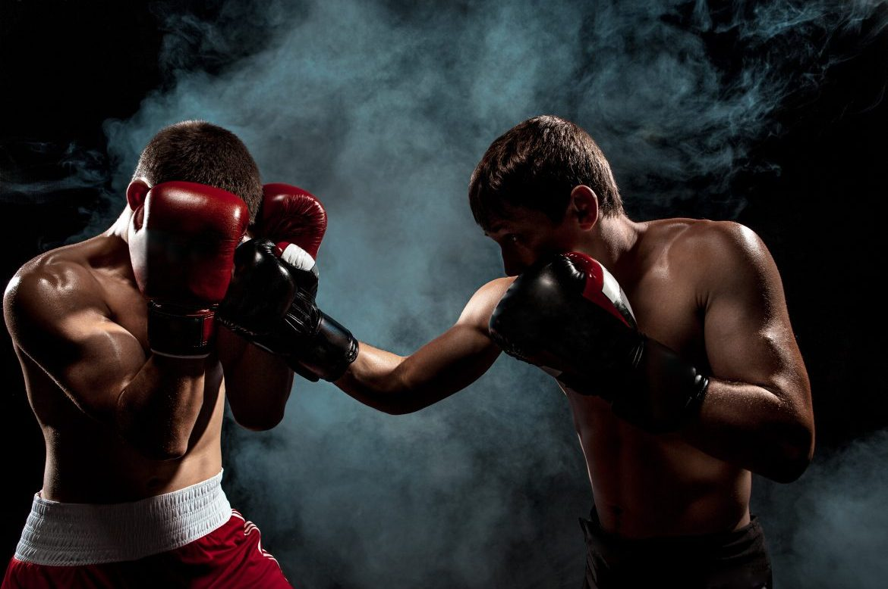
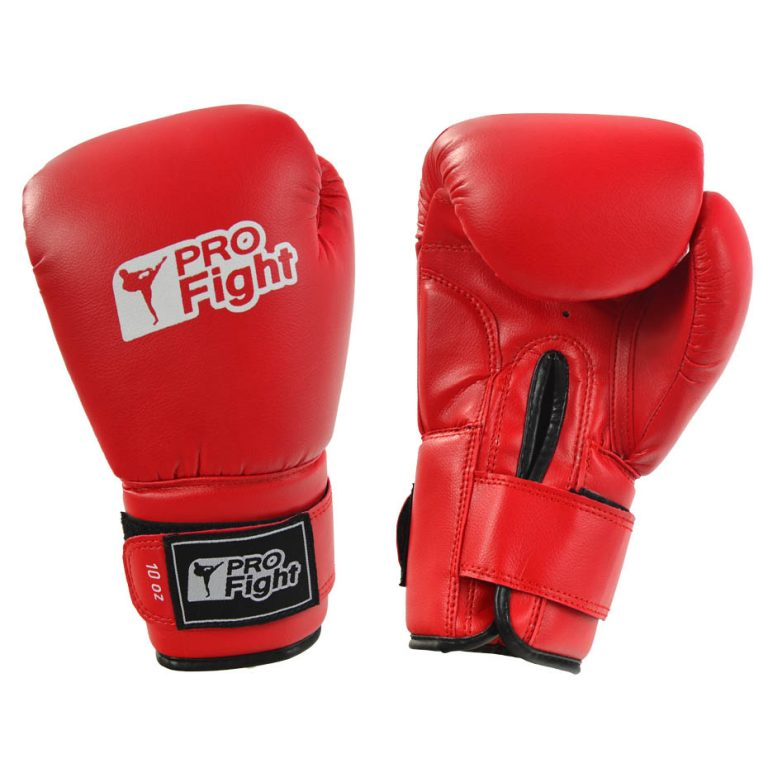
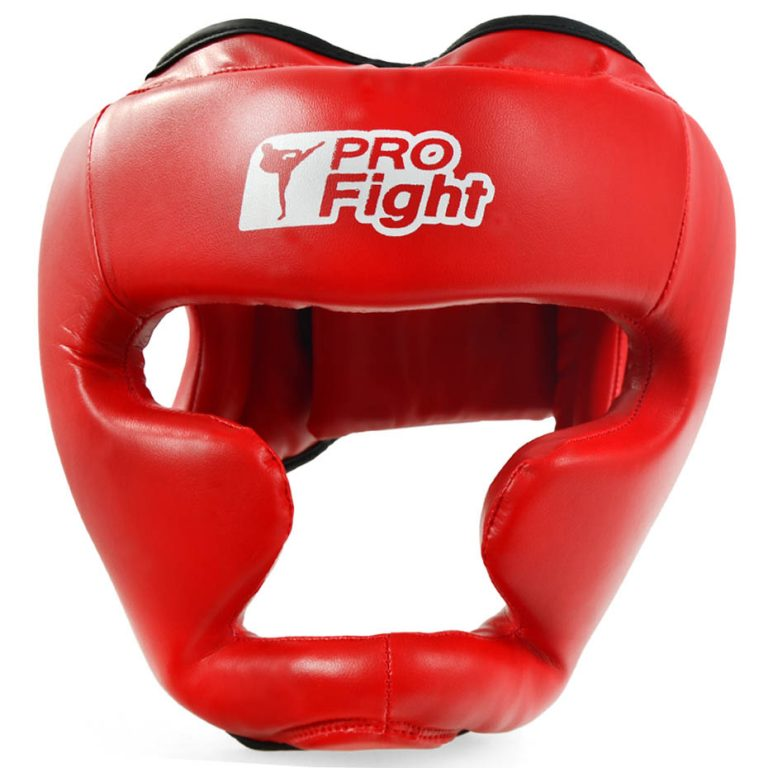

Od kilku lat w Polsce zauważyć można ciekawy trend – powstające jak grzyby po deszczu kluby sztuk walki. Treningi cieszą się rosnącą popularnością, co ciekawe nie tylko wśród mężczyzn. Mimo braku poważniejszych polskich sukcesów i gwiazd wielkiego formatu, nie słabnie moda na boks. Pięściarstwo to szlachetny sport o bogatych tradycjach. Jeśli myślisz o rozpoczęciu swojej przygody z tą dyscypliną, damy Ci kilka rad, jak powinien wyglądać prawidłowy trening w boksie.
Nikt nie rodzi się mistrzem, do efektów musisz dojść sumienną pracą. Na pewno w głowie masz wielkie walki i popisy techniczne, ale na nie jeszcze przyjdzie czas.
Z początku zadbaj przede wszystkim o swoją kondycję – idź na trening. Boks to dyscyplina wyjątkowo intensywna, w której nierzadko wygrywa nie ten silniejszy, ale
ten lepiej przygotowany. Być może pamiętasz walkę Krzysztofa Włodarczyka z Rachimem Czakijewem. Nasz były mistrz pozwolił się wyszaleć na początku walki silnemu
jak tur Inguszowi, by bezapelacyjnie zdominować go w drugiej części starcia.
Zaprzyjaźnij się ze skakanką, która poprawi Twoją wydolność, a przy okazji nauczy właściwego timingu. Naucz się prawidłowo stawiać kroki i poruszać w ringu.
Zdobądź umiejętność przemieszczania się w różnych płaszczyznach, aby stać się nieuchwytnym dla rywala. Dopiero wtedy, mając te podstawy, rozpocznij pracę nad
siłą i precyzją ciosu.
Słynny Floyd Mayweather Jr twierdzi, że walki wygrywa się nie atakiem, ale obroną. Taka taktyka pozwoliła mu osiągnąć perfekcyjny bilans 50-0, a przy okazji
uniknąć poważniejszych urazów i cieszyć się wspaniałą formą nawet w wieku czterdziestu lat.Klasyczny boks to nie brutalna bitka, ale pokaz wspaniałej
technicznej szermierki na pięści. Pamiętaj o tym, niezależnie od tego, czy przygodę z boksem traktujesz rekreacyjnie czy zawodowo. Wyrób sobie nawyk trzymania
szczelnej i twardej gardy. Pamiętaj o pracy nóg. Choć bić będziesz dłońmi, prawdziwa moc bierze się z umiejętności właściwego ustawiania. Pozwoli Ci ona przy
okazji na uniknięcie ciężkich ciosów przeciwnika.


Ćwicz też samodzielnie, nie tylko na sali treningowej. Pracuj nad refleksem uderzając w gruszkę lub worek bokserski. Dużo biegaj, aby nogi i płuca nie odmówiły Ci posłuszeństwa w chwili decydującej próby. I pamiętaj – nie chodzi o to, by zmiażdżyć rywala, ale o to, by go przechytrzyć. Odpowiednia taktyka i skrupulatne przygotowanie to 90% sukcesu, talent to ledwie pozostała reszta. Ciężką pracą można zajść naprawdę wysoko – tak jak podkreśla to nasz były mistrz świata wagi cruiser, Krzysztof Głowacki.